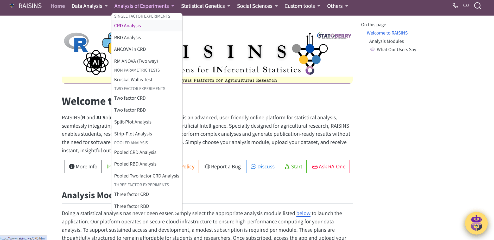
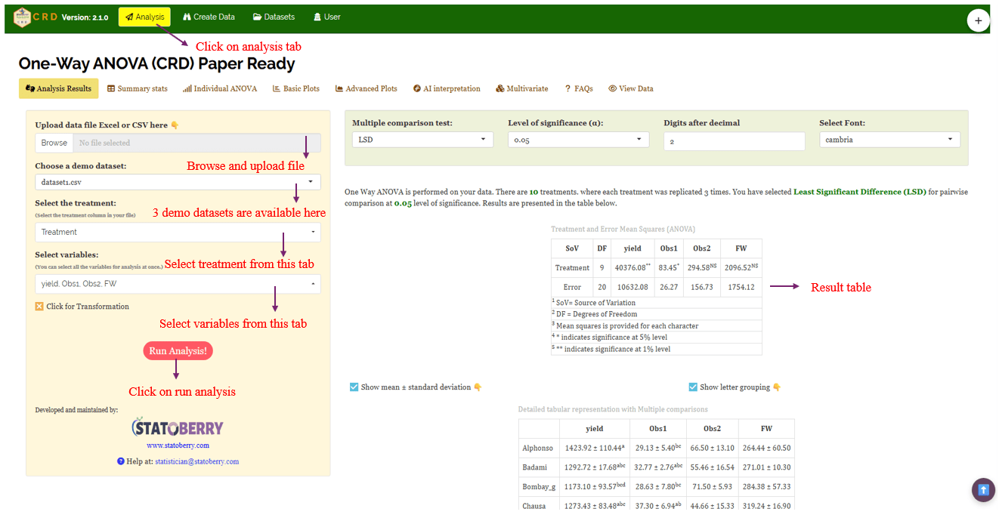
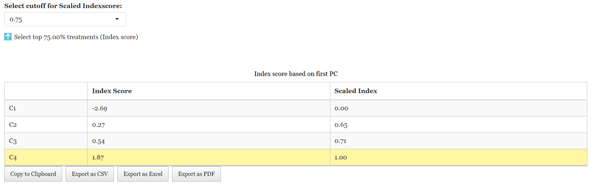
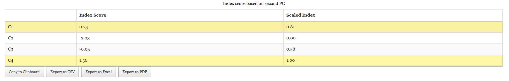
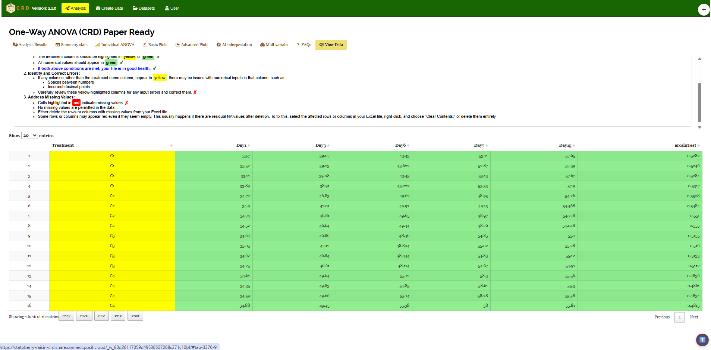
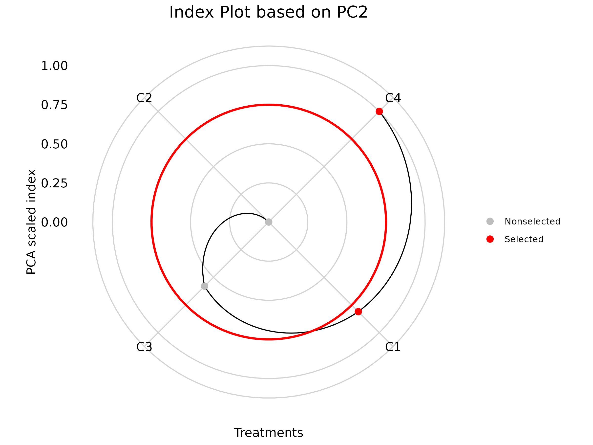

Completely Randomised Design
In the 1920s, statistician Ronald A. Fisher made significant contributions to the development of the Completely Randomized Design (CRD), which was first used in the early 20th century. Fisher developed this design to enhance agricultural studies, particularly to identify subtle yet significant variations in crop yields under various fertilizer treatments. His novel approach was to prevent bias and enable reliable statistical analysis through analysis of variance (ANOVA) by randomly assigning treatments to experimental units (like land plots). In order to prevent bias and enable reliable statistical analysis using analysis of variance (ANOVA), he invented the practice of randomly allocating treatments to experimental units (such as land plots) as in Figure 1
In this design,experimental units are randomly assigned to treatments without any systematic bias, ensuring that every unit has an equal probability of receiving any given treatment. This random assignment helps counter potential biases and addresses the inherent variability among experimental units, making comparisons between treatments impartial. In order to account for natural variation in soil and environment, the first famous instances involved agricultural field trials in which adjacent plots were randomly assigned to different crop kinds or fertilizer treatments. Agricultural field trials were the first well-known instances, in which adjacent plots were randomly assigned to different crop varieties or fertilizer treatments to account for inherent soil and environmental variance.
Although CRD is generally not advised for heterogeneous settings, it is especially appropriate when the experimental material is homogeneous, as in laboratory or greenhouse investigations. Due to its ease of use and efficiency, CRD has established itself as a key instrument in experimental statistics and is still essential in domains including industrial engineering, quality control analysis, medicine, and agriculture.

Key Characteristics
Here are the main features of the design - hover or click each point to see more information.
- 🎲 Random allocation
- 🌿 Homogeneous conditions
- 🔄 Flexibility
- 📊 Simple analysis
When to Use CRD? Explore Each Situation
Below given are the appropriate situations to be used for CRD, please click on each icon to see more information
🧪 Laboratory Experiments
Best used under controlled conditions for reproducible results.
🌱 Greenhouse Experiments
Ideal for experiments where environmental uniformity is crucial.
🐄 Animal Feeding Trials
Works well when animals are homogeneous in age, breed, or weight.
🪴 Pot Experiments
Suitable for experiments with uniform soil and environmental factors.
Advantages & Disadvantages of CRD
Layout Example
Suppose we’re testing 4 fertilizer treatments (A, B, C, D) with 5 replications each (20 experimental units total):
Randomized CRD Layout
CRD Linear Model
Explore the linear model for Completely Randomized Design (CRD) interactively:
CRD Linear Model
Yij = μ + τi + εij
- Yij = observation for the jth unit receiving the ith treatment
- μ = overall mean
- τi = effect of the ith treatment
- εij = random error (assumed ~ N(0, σ²))
- i = 1, 2, …, t (number of treatments)
- j = 1, 2, …, r (number of replications)
Hover over this card to see it pop!
Analysis of Variance (ANOVA)
ANOVA - CRD
Example
Let’s explore some practical situations in agricultural research where the Completely Randomised Design, also known as the CRD, is applied.
Study Context
- Ten mango cultivars (V1 through V10), each representing a different treatment, are being evaluated by a horticultural scientist. Alphonso, Kesar, Dasheri, Himsagar, Chausa, Badami, Safeda, Bombay, Langra, and Totapuri are among the kinds that are included. Thirty observations are obtained by replicating each variety three times. Each response variable (yield, Obs1, Obs2, FW) can be analyzed using a Completely Randomized Design (CRD) to see whether the mango varieties differ significantly from one another.Example1
- The impact of four chemical treatments (C1 through C4) on a response variable that is measured over time is being assessed by a chemist. There are four replications of each treatment, for a total of 16 observations per time point. On Day 1, Day 3, Day 6, Day 7, and Day 15, observations were made. There are four replications for every treatment since each treatment is repeated four times. An Arcsine transformation can be tested using the proportion data in the final column. To ascertain whether the four chemical treatments differ significantly from one another, a Completely Randomized Design (CRD) can be employed to examine each response variable or time point independently.Example2

- An engineer is evaluating three different shapes of an instrument (Wedge, Sphere, and Square) to study their effect at different depths. Each shape is tested 10 times, giving a total of 30 observations. Observations were recorded at 4 depths: 1mm, 2mm, 3mm, and 4mm. Since each shape is replicated 10 times, there are 10 replications per shape. A Completely Randomised Design (CRD) can be used to analyze each depth separately to determine whether there are significant differences among the three shapes of the instrument. Example3

Theory
The theory of the Completely Randomized Design can be read below, or if you’re a non-statistician who is simply interested in the practical elements, you can go straight to Section—, where we’ve provided a real-world example. The essential procedures for carrying out the Completely Randomized Design are described in the theoretical section. Comprehending these ideas will enable you to do the analysis with assurance and clarity.
Assumptions
In order to guarantee the validity and dependability of experimental outcomes, CRD (Completely Randomized Design) is predicated on a number of essential assumptions. Maintaining these fundamental parameters throughout the experiment is crucial for the integrity of statistical analysis, particularly when employing ANOVA.
Independence : In experimental design the outcome (response) of one experimental unit is not affected by or connected to the outcome of another unit
Random Assignment : In experimental design, randomization is the process of allocating treatments to experimental units at random, ensuring that each unit has an equal chance of receiving any given treatment
Homogeneity of Variance : Also referred to as homoscedasticity, the variance of mistakes should be the same for every group or treatment
Normality : Each treatment’s residuals or errors should have a normal distribution. For ANOVA results to be valid, this is necessary
Additivity : There is no interaction between unaccounted for factors; the effects in the model are additive. This indicates that the overall mean, treatment effect, and random error add up to the observed result
Hypotheses
The Completely Randomized Design (CRD) evaluates the following hypotheses:
All treatment means are equal, indicating that the treatments have no significant effect on the response variable
\[H_0 : \mu_1 = \mu_2 = \cdots = \mu_t\]
At least one treatment mean (\(\mu_i\)) is significantly different from the others, suggesting that treatments have an effect on the response variable.
\[H_1 : \text{At least one } \mu_i \text{ differs}\]
The Test Statistic
\[ F = \frac{\text{Mean Square due to Treatments (MST)}}{\text{Mean Square due to Error (MSE)}} \]
This statistic is used to determine whether there are significant differences among the treatment means.
Correction for Ties
If the assumptions of ANOVA are slightly violated, or if there are unequal sample sizes (missing values) in the dataset, the F-statistic can be adjusted using Aitken’s adjustment or a corrected mean square approach:
\[ F_{adjusted} = \frac{\text{Corrected Mean Square Between Treatments}}{\text{Corrected Mean Square Error}} \] This ensures that the test remains valid under minor violations of CRD assumptions.
Interpreting the Results
In a Completely Randomised Design (CRD), the analysis of variance (ANOVA) is used to test whether there are significant differences among the treatment means. The test statistic, F, follows an F distribution with two sets of degrees of freedom: the numerator degrees of freedom (k−1), where k is the number of treatments, and the denominator degrees of freedom (N−k), where N is the total number of experimental units. To determine if the null hypothesis—that all treatment means are equal- can be rejected, the calculated F value from the ANOVA table is compared to the critical F value obtained from an F distribution table based on the degrees of freedom and the chosen significance level (α). If the computed F value exceeds the critical value, the null hypothesis is rejected, indicating that at least one treatment mean differs significantly from the others. However, ANOVA alone does not indicate which specific treatments differ. Therefore, if a significant difference is detected, multiple comparison tests such as Tukey’s HSD, Bonferroni, or Fisher’s LSD are performed to make pairwise comparisons between treatments and identify precisely where the differences exist.
Add these tests Tukey’s HSD, Bonferroni, or Fisher’s LSD
Post-hoc test
When the ANOVA in a Completely Randomised Design (CRD) is significant, the following post hoc tests are commonly used for pairwise comparisons: Tukey’s Honestly Significant Difference (HSD) test, Bonferroni correction method, and Fisher’s Least Significant Difference (LSD) test. These tests help identify which specific treatment means differ from each other, addressing the limitation of ANOVA in not indicating the exact sources of variation.
Tukey’s Test
Let’s explore Tukey’s Honestly Significant Difference (HSD) test as it applies to Completely Randomized Design (CRD). After conducting an ANOVA on your CRD experiment, which tells you if there is any significant difference among group means overall, Tukey’s HSD test helps you find out exactly which pairs of treatment means differ significantly.
The main idea is that Tukey’s HSD compares all possible pairs of treatment means while controlling the overall Type I error rate, so you avoid false positives when making multiple comparisons. It calculates a critical value based on the number of treatments, degrees of freedom for error (from ANOVA), and the mean square error.
In CRD, this method works well because treatments are assigned completely at random and the error variance is assumed homogeneous. Tukey’s HSD uses the within-group variance from ANOVA (Mean Square Error) and the number of replicates per treatment to assess whether the difference between any two means is “honestly significant.”
Before explaining the formula and steps, could you share how comfortable you are with ANOVA in CRD and post-hoc tests like Tukey’s HSD? This helps me tailor the explanation.
LSD (Least Significant Difference) Test
The Least Significant Difference (LSD) test is a post-hoc statistical procedure used in the context of a Completely Randomized Design (CRD) to identify which specific treatment means differ significantly after a one-way ANOVA has indicated an overall significant effect. When the ANOVA F-test rejects the null hypothesis, it implies that at least one treatment mean is different, but it does not specify which pairs differ. The LSD test addresses this by performing pairwise comparisons between treatment means using a critical difference threshold.
The LSD is calculated as \[ \text{LSD} = t_{\alpha/2, \, df_{\text{error}}} \sqrt{\frac{2 \cdot \text{MSE}}{n}} \] where, t_{/2, , df_{}} is the critical t-value at the chosen significance level (e.g., 0.05), MSE is the mean square error from the ANOVA, and n is the number of replications per treatment under equal sample sizes. Any absolute difference between two treatment means exceeding this LSD value is declared statistically significant. The test assumes homogeneity of variances and is most valid when the overall F-test is significant, as it uses a pooled error term from all treatments, making it more powerful but also more prone to Type I errors when multiple comparisons are made without adjustment. Therefore, while the LSD test is simple and sensitive, it should be applied cautiously, preferably for pre-planned comparisons or adjacent means in ordered arrays, to avoid inflated error rates due to data snooping.
p Adjustment Method
The p adjustment method used for CRD in RAISINS is none.
Getting started in RAISINS
RAISINS (R and AI Solutions in INferential Statistics) is an online platform designed to make agricultural research data analysis easier. RAISINS doesn’t need to be downloaded; it’s entirely online. It provides robust, user-friendly statistical tools by combining the strengths of R, Python, and AI. The Department of Agricultural Statistics, College of Agriculture, Vellayani, Kerala Agricultural University, is providing mentorship to STATOBERRY LLP as it develops the platform.
Head to www.raisins.live where you can access various analytical modules. You can access the completely randomised design module from the analysis tools under Analysis of Experiments.

A working example
We’ll walk you through every stage of the Completely Randomised Design step by step. Let’s start by examining how the analysis can be performed using Example 1, which is covered in Study Context Section . For clarity, here’s a quick recap of the example: Ten mango cultivars each representing a different treatment, are being evaluated by a horticultural scientist. Alphonso, Kesar, Dasheri, Himsagar, Chausa, Badami, Safeda, Bombay, Langra, and Totapuri are among the kinds that are included. Thirty observations are obtained by replicating each variety three times.
 The dataset format required for analysis in RAISINS is illustrated in Figure 2.3.
The dataset format required for analysis in RAISINS is illustrated in Figure 2.3.
Once the dataset is ready, head onto the Analysis tab in RAISINS and click on Browse and upload the data in csv, xls or xlsx format. After uploading select the treatment and variables of interest(multiple variables can also be selected) and then click on Run Analysis. A complete publication ready results and tables will be generated. Results can be downloaded as pdf, html or word format. See Figure 2.4 for marked Analysis window in RAISINS.
Results
RAISINS generates result table in the format given in Figure 2.5 after the analysis. The result table contains mean ± SD of each observed characters, Chi-square values and p-values showing test significance. The table contains chi-square statistics of each character and it’s significance(p-value). ** indicates significance at 1% level and * indicates significance at 5% level.
RAISINS generates result table in the format given in Figure after the analysis.


Customization tabs
In RAISINS, you can easily customize your analysis by adjusting settings such as decimal places, choice of post-hoc tests, p-value adjustment methods, font style, and significance level. These options help tailor the results to your specific needs, as shown in Figure.

Plots and graphs
Do follow the below given steps for making plots and graphs for Completely Randomised Design
Step 1: Click Run Analysis - your results appear instantly, organized and ready to review.
Step 2: Open the Plots & Graphs tab to find all CRD plots in one place.
Step 3: Use the ⚙️ gear icon to customize your plots - colors, labels, styles, and more!
Step 4: Export your plots in high-quality PNG (300 dpi) for reports or presentations.
RAISINS transforms analysis into a visual, interactive, and effortless journey

Boxplot summarizes continuous data distribution using quartiles and identifies outliers.

Barplot displays categorical data with rectangular bars proportional to values.

Mean Value Plot displays the average value of a variable across categories, often combined with individual data points to show both central tendency and distribution.

Connected Line Plot links sequential data points with lines to illustrate trends or changes over time or ordered intervals.

Violin Plot is a data visualization that combines a boxplot and a kernel density plot to show both the summary statistics and the probability density of a numeric variable across different categories, with the width of the shape indicating the density of data points at various values.
RAISINS provides user various customization features for the plots to enhance the visualization according to the requirement of the user. Click on the below images to get a clear idea on the customizing features


×
Multivariate and AI
The Completely Randomised Design (CRD) is generally used to compare the effects of different treatments on a single response variable. However, when multiple traits are measured for the same set of treatments (for example: Yield, Plant Height, Leaf Area, Root Weight, and Quality), you can explore them together using the Multivariate tab (see Figure —–).Multivariate analysis in CRD helps you examine how treatments perform across several traits simultaneously-offering a broader view of treatment performance. Remember, the Principal Component Analysis (PCA) used here is an exploratory tool, helping you visualize relationships among traits and treatments, but it is not an inferential statistical test.  To perform MANOVA and PCA please note that the number of treatments must be greater than the number of variables. A MANOVA and PCA will be automatically carried out based on the selected variables. MANOVA table with interpretation appears automatically.PCA results and plots will appear along with automated interpretation.
To perform MANOVA and PCA please note that the number of treatments must be greater than the number of variables. A MANOVA and PCA will be automatically carried out based on the selected variables. MANOVA table with interpretation appears automatically.PCA results and plots will appear along with automated interpretation.



 




Preparing your data
“Your analysis is only as good as your data! Feed RAISINS high-quality data, and it will deliver powerful insights feed it messy data, and the results won’t be trustworthy.”
Create your dataset in MS Excel
Build your dataset directly within the RAISINS app
Preparing data in MS Excel
Open a new blank sheet in MS Excel with only one sheet included, and avoid adding any unnecessary content. The dataset should follow a column-based format, where the first column represents the treatment or group to be compared—you can name this column appropriately, such as “Group” or “Treatment.” All characters under study (e.g., Appearance, Texture, Taste) should be arranged in separate columns, and each group should be repeated according to the number of replications. The file can be saved in CSV, XLS, or XLSX format, but CSV is recommended as it is lighter and enables faster loading. Ensure that there are no unwanted spaces in column names or group names. For reference, see the structure shown in Figure—-. As illustrated in Figure 2.3, groups must appear repeatedly based on replications, and the data can also be arranged as shown in Figure—–.
Creating dataset in RAISINS
If you’re unsure about the correct format for creating a dataset, don’t worry - Raisins offers an option to create data directly within the app using the prescribed template. Here’s how:
Navigate to the Create Data Tab
Select the number of Treatments
Select number of Replications
Click on Create button
Model layout will appear as shown in Figure—–. Now you may enter the observations manually into the CSV file once downloaded, or paste the observations straight into the file provided. Once you have entered the observations in the layout, download the csv file and upload in Analysistab!

Model Datasets
FAQ’s

USER